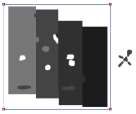
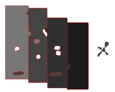

Công cụ trích xuất đường viền thực chất là trích xuất biên dưới mức điểm ảnh (sub-pixel) từ hình ảnh, lấy các điểm biên, sau đó tổ chức các điểm biên này thành các biểu diễn đường viền có ý nghĩa hình học hơn, dùng để trích xuất đường viền từ hình ảnh hoặc khu vực chỉ định trong hình ảnh. Kết quả thực tế được minh họa như Hình 1.


| Phân loại | Tên tham số | Mô tả tham số |
|---|---|---|
| Cửa sổ thuộc tính | ROI trích xuất đường viền | Khu vực trích xuất đường viền, có 8 loại: toàn bộ ảnh, ROI hình chữ nhật, ROI hình chữ nhật affine, ROI hình tròn, ROI vòng tròn, ROI đoạn vòng tròn, ROI hình elip, ROI đa giác. |
| Ngưỡng nhiễu | Giá trị trung bình biên độ gradient của biên; các giá trị nhỏ hơn ngưỡng này sẽ bị coi là nhiễu. | |
| Ngưỡng chiều dài đường viền | Chiều dài đường viền được đo bằng số điểm ảnh; các đường viền nhỏ hơn ngưỡng này sẽ bị loại bỏ và không hiển thị trong kết quả trích xuất đường viền. | |
| Hiển thị kết quả theo thời gian thực | Chọn "Có", sau khi thay đổi khu vực tìm kiếm, không cần chạy công cụ vẫn có thể hiển thị kết quả; chọn "Không", sau khi thay đổi khu vực tìm kiếm phải chạy công cụ mới hiển thị kết quả tương ứng. | |
| Cửa sổ ảnh | Ảnh đầu vào | Hiển thị hình ảnh cần kiểm tra. |
| ROI hình chữ nhật | Khu vực hình chữ nhật tham gia tìm kiếm trong ảnh. | |
| ROI hình chữ nhật affine | Khu vực hình chữ nhật affine tham gia tìm kiếm trong ảnh. |
|
| Dữ liệu chuỗi | Ảnh đầu vào | Chiều rộng, chiều cao và kích thước điểm ảnh của ảnh đầu vào, giống như tham số ảnh đầu vào trong cửa sổ ảnh. |
| Biến đổi tuyến tính 2D | Biến đổi dịch, xoay, co giãn của mục tiêu so với mẫu. | |
| Giao diện nâng cao | Không có |
| Phân loại | Tên tham số | Mô tả tham số |
|---|---|---|
| Cửa sổ giám sát | Ảnh đầu vào | Chiều rộng, chiều cao và kích thước điểm ảnh của ảnh đầu ra. |
| Tất cả đường viền | Xuất tọa độ các điểm kết quả thỏa điều kiện đã thiết lập. | |
| Chuỗi đường viền | Xuất tọa độ các điểm của từng chuỗi đường viền. | |
| Tổng số đường viền | Xuất số lượng đường viền. | |
| Kết quả thực thi | Hiển thị kết quả thực thi của công cụ. | |
| Thời gian thực thi | Hiển thị thời gian thực thi của công cụ. | |
| Cửa sổ ảnh | Ảnh đầu vào | Hiển thị ảnh liên kết với tọa độ galvanometer, giống như tham số ảnh đầu ra của cửa sổ giám sát. |
| Tất cả đường viền | Hiển thị các đường viền thỏa điều kiện đã thiết lập, giống tham số "tất cả đường viền" của cửa sổ giám sát. | |
| Kết quả thực thi | Hiển thị kết quả thực thi của công cụ; nếu thành công hiển thị "OK", thất bại hiển thị "NG", giống tham số kết quả thực thi của cửa sổ giám sát. | |
| Dữ liệu chuỗi | Tất cả đường viền | Xuất thông tin kết quả thỏa điều kiện, dùng cho công cụ tiếp theo, giống tham số "tất cả đường viền" của cửa sổ giám sát. |
| Chuỗi đường viền | Xuất tọa độ từng chuỗi đường viền, dùng cho công cụ tiếp theo, giống tham số "chuỗi đường viền" của cửa sổ giám sát. | |
| Tổng số đường viền | Xuất tổng số đường viền, giống tham số "tổng số đường viền" của cửa sổ giám sát. |
ROI hình chữ nhật là một khung tương tác có thể chọn vùng quan tâm trên hình ảnh. Người dùng có thể điều chỉnh vị trí trung tâm, chiều rộng và chiều cao của khung. Kéo chuột trên khung để thay đổi kích thước; chọn cạnh khung để điều chỉnh vị trí.
ROI hình chữ nhật affine là khung tương tác có thể chọn vùng quan tâm trên ảnh với khả năng biến đổi affine. Người dùng có thể điều chỉnh chiều dài X, Y, góc xoay, góc cắt và vị trí của ROI. Kéo chuột trên khung để thay đổi chiều rộng, chiều cao, góc xoay và góc cắt; chọn cạnh khung để điều chỉnh vị trí.
Không có
参见“\Samples\轮廓提取工具.gvp”。